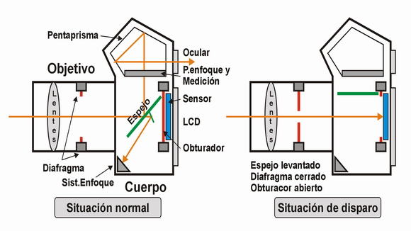

Las cámaras SLR son las cámaras serias de toda la vida. SLR quiere decir "Single Lens Reflex", pero también se las ha conocido siempre bajo el nombre de REFLEX. Son cámaras con objetivo intercambiable, que utilizan en su cuerpo un espejo movil para producir la imagen que se ve en el visor óptico que lleva acoplado un ocular. Hace ya muchísimos años, hacia el final de la década de los 70, cuando se inventó el autofoco, al espejo principal o primario, se le añadió otro secundario, que permitía desviar parte de la luz hacia el sistema de enfoque, y conseguir así que la cámara "auto-enfocara". Hasta no hace mucho, todas las SLR eran analógicas (de película, mejor dicho). Ahora, prácticamente todas son digitales, y por ello la D del nuevo acrónimo "DSLR". Aún corriendo el riesgo de contar algo que la mayoría ya sabéis, dejarme poner un pequeño croquis que ilustra razonablemente bien el mecanismo de una REFLEX.


- m
- G
- u
- z
- m
- á
- n
Situación de disparo:
Al presionar el botón del disparador, ocurren varias cosas secuencialmente.- Se cierra el diafragma al valor seleccionado por el sistema de medición, o manualmente.
- Se levanta el espejo primario, y se pliega el secundario, dejando a la luz el camino libre para llegar a la película o al sensor.
- Se abre la primera cortinilla del obturador mecánico, exponiendo la película o el sensor a la luz.
- Se cierra la segunda cortinilla, en función de la velocidad seleccionada, y se termina la exposición.
- Se baja el espejo y se abre el diafragma, quedando la cámara lista para una nueva utilización.
Nótese que durante la toma, la imagen desaparece del ocular, pues el espejo está levantado. Todo eso ocurre muy rápidamente. Las modernas DSLR pueden tener velocidades de ráfaga del orden de 5 a 8 imágenes por segundo. De forma que todo el proceso debe durar como máximo unos 100 milisegundos, lo que es un verdadero prodigio dada la inercia, masa y desplazamiento de los elementos implicados.
Situación normal:
La luz entra a través del objetivo, cuyo diafragma se encuentra totalmente abierto. Se refleja en el espejo primario, hacia la pantalla de enfoque. Ahí se realiza la medición fotométrica y se puede confirmar el “foco” en caso de lentes manuales. Las antiguas pantallas de enfoque disponían de ayudas como los microprismas o la imagen partida, para facilitar la precisión del enfoque manual. La luz, continúa su recorrido y se refleja en la paredes del microprisma para llegar al ocular, donde el usuario puede visualizar y componer la escena.
Una pequeña parte de la luz, atraviesa el espejo primario, que es parcialmente transparente (al menos en una zona), y se refleja en el espejo secundario para llegar a los sensores de autoenfoque. Normalmente el enfoque se hace al pulsar ligeramente el botón de disparo, justo antes de tomar la imagen. En las SLR antes, y ahora en las DSLR, el enfoque se hace mediante una tecnología basada en la "diferencia de fase", lo que asegura un enfoque rápido y muy preciso.
TAMAÑO DEL SENSOR
En las DSLR, estamos hablando de cámaras serias, hay tres tamaños de sensor, todos grandes.
- El más grande es el llamado FF (Full Frame) o Formato completo, y corresponde al tamaño de la película de 35mm, donde el fotograma medía 24 x 36 mm con relación de aspecto 3:2. Con él se pueden utilizar todos los objetivos antiguos, y los modernos que sean capaces de llenar un circulo de imagen superior al FF. No hay factor de recorte.
- El mediano, usado solo por Canon, es el llamado APS-H. Mide 19,1 x 28,7 también con relación de aspecto 3:2. Con él se pueden utilizar los mismos objetivos que con el FF. El factor de recorte es 1,3 aproximadamente. Como el sensor es más pequeño, recoge una menor superficie de la imagen proyectada por el objetivo, de la que solo se aprovecha la parte central. Como resultado, es como si el objetivo tuviera una focal más larga. Por ejemplo, un 100 mm en FF, es un 130 mm en APS-H. Esta relación es la que se ha llamado: "factor de recorte".
-
El pequeño, usado por todos y profusamente, se llama APS-C. Mide 15,5 x 23,6 con la misma relación de aspecto de 3:2. Con él se pueden utilizar todos los objetivos para FF, y también todos los nuevos objetivos diseñados para el APS-C (cada marca tiene una nomenclatura diferente), pero no al revés. El factor de recorte es ahora 1,5 ó 1,6 (según la marca). Nuestro 100 mm en FF, son 130 mm en APS-H y 150 ó 160 mm en APS-C.
Olympus, allá por el año 2003, presentó un sistema totalmente nuevo que llamó 4/3. Era su resurgimiento en el campo de las DSLR. El nuevo estandar, que nació como un sistema abierto, tenía indudablemente muchas ventajas, pero finalmente ha tenido que claudicar pues no obtuvo el éxito comercial esperado. No pudo frente a los de siempre, más Sony, que muy pronto se sumó a la fiesta de las DSLR.
-
En este punto solo nos interesa su sensor. Era un sensor de tamaño 18 x 13,5 (el más pequeño de los grandes – aproximadamente 1/4 del FF) y con una relación de aspecto de 4:3 (como las TV de tubo). Su factor de recorte es 2. Al ser un sistema nuevo solo se podían utilizar objetivos propios del sistema.
Como herencia, el difunto sistema 4/3 ha dejado como legado el sensor y el sistema de autolimpieza por vibración ultrasónica (SSWF). Ambos han sido adoptados por el nuevo estandar Micro 4/3, patrocinado por la propia Olympus y por Panasonic, del que hablaremos en el siguiente capítulo.
Multimedia
Imagenes redimensionadas

Video iframe
Imagen vectorial